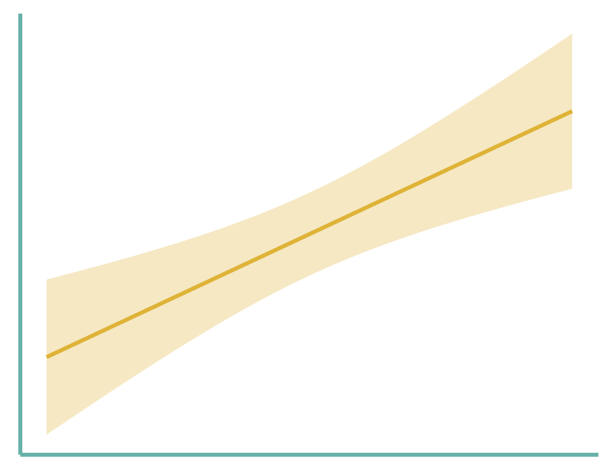
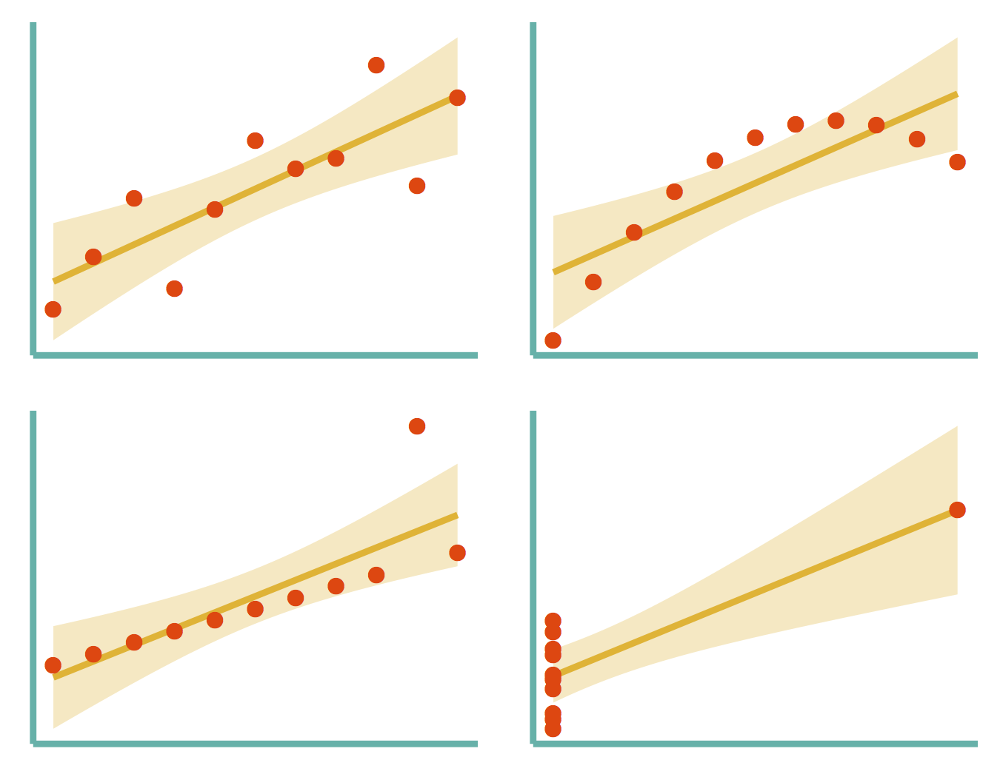
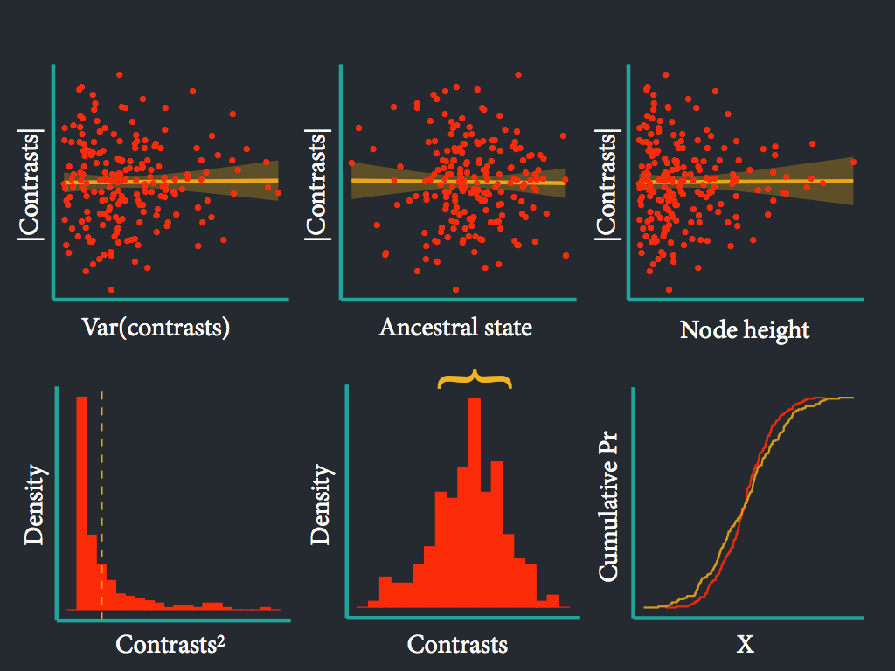
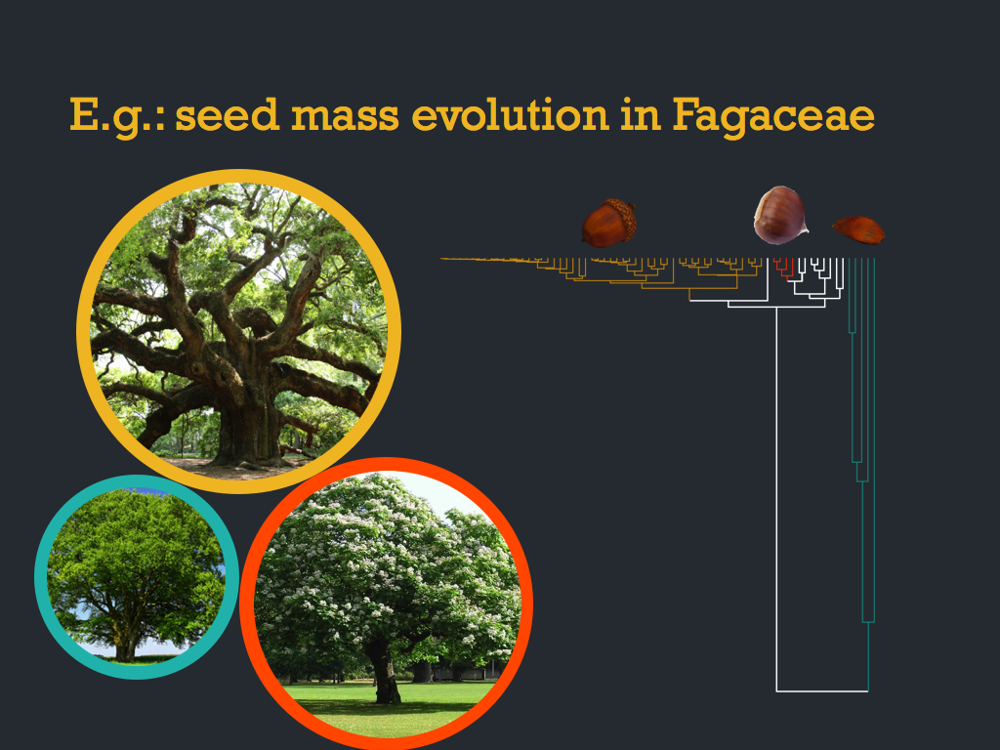
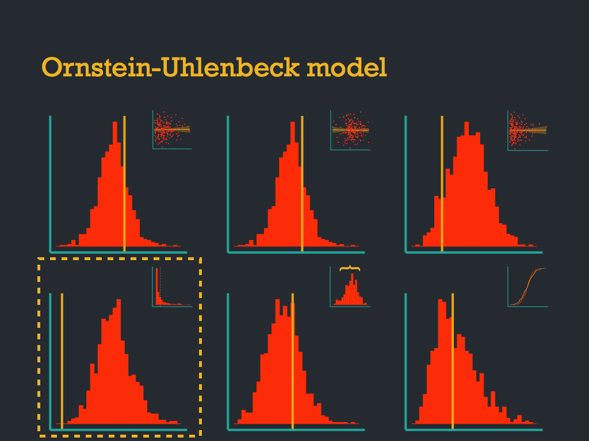

name: inverse layout: true class: center, middle, inverse --- #Phylogenetic model adequacy ###All models are wrong and sometimes even the best of a set of models is useless. .footnote[Go to directly to [github repo](https://github.com/mwpennell/arbutus)] --- class: center, middle, inverse <img src="https://pbs.twimg.com/media/BmMdiSkCcAEJDdL.png" alt="Drawing" style="width: 500px;"/> --- class: center, middle, inverse <img src="https://github.com/mwpennell/arbutus/raw/master/extra/arbutus_logo.png" alt="Drawing" style="width: 500px;"/> --- class: center, middle, inverse <img src="../graphics/fraction-on-phylogeny.jpg" alt="Drawing" style="width:550px" align="middle"/> --- layout: false name: how .left-column[ ## Install library ] .right-column[ ```python install.packages("devtools") library(devtools) install_github("mwpennell/arbutus") library(arbutus) ``` ] --- layout: false name: how .left-column[ ## Model adequacy: what is it? ] .right-column[ <p></p> ] --- .left-column[ ## Model (in)adequacy: ### A hint that something else is going on ] .right-column[ <p></p> r^2=0.67, P=0.002, Anscombe 1973 ] --- .left-column[ ## For (phylogenetic) models of trait evolution ] .right-column[ - Plotting is sometimes complicated - No general method for assessing model adequacy ] --- template: inverse ## Our approach --- .left-column[ ## The general (simple) idea ] .right-column[ - Fit the model to comparative data -- - Use fitted parameters to simulate data -- - Compare observed to simulated data -- - Look for differences -- ] --- class: center, middle, inverse # If we re-ran evolution, how likely are we to see a dataset like ours? --- name: how .left-column[ ## Aspects of phylogenetic data ] .right-column[ - Species are not independent data points - Instead use "contrasts" ] --- class: center, middle, inverse <img src="http://upload.wikimedia.org/wikipedia/en/2/28/Phylogenetically_Independent_Contrasts_1.jpg" alt="Drawing" style="width:550px" align="middle"/> --- name: how .left-column[ ## Types of trait evolution models ] .right-column[ - Brownian motion <img src="http://upload.wikimedia.org/wikipedia/commons/6/6d/Translational_motion.gif"> - Mean reverting processes - Heterogeneous models ] --- class: center, middle, inverse <img src=" http://upload.wikimedia.org/wikipedia/commons/thumb/7/7d/Diffusion_of_Brownian_particles.svg/464px-Diffusion_of_Brownian_particles.svg.png"> --- name: how .left-column[ ##Nice things about unit trees ] .right-column[ -Transformation applies to most* models of continuous trait evolution -If model is appropriate, contrasts on unit tree will be I.I.D. ~ Normal(0, 1) - same as BM with \sigma ^2 = 1 ] --- name: how .left-column[ ##The whole process ] .right-column[ 1. Fit model, estimate parameters 2. Build unit tree from simulated parameters 3. Calculate test statistics on contrasts 4. Simulate n BM datasets on unit tree 5. Calculate test statistics on contrasts of sim data 6. Compare test statistics between obs and sim ] --- ##Statistical ways that the observed trait evolution model may be different that the model 1. Coefficient of variation of contrasts -- 2. Evaluate normality of contrasts -- 3. REML estimate of BM parameter -- 4. Relationship between contrasts and inferred ancestral state -- 5. Relationship between contrasts and node height -- 6. Relationship between contrasts and their variances --- class: center, middle, inverse <p></p> --- layout: false name: how .left-column[ ## Fit model to data and then assess model ] .right-column[ ``` data(finch) phy <- finch$phy plot(finch$phy) data <- finch$data[,"wingL"] data install.packages("geiger") require(geiger) ## fit Brownian motion model ## using geiger's fitContinuous function fit.bm <- fitContinuous(phy=phy, dat=data, model="BM",control=list(niter=10)) modelad.bm <- arbutus(fit.bm, nsim=10) modelad.bm plot(modelad.bm) ``` ] --- class: center, middle, inverse <p></p> --- class: center, middle, inverse <p></p> --- class: center, middle, inverse ###<a href="http://biorxiv.org/content/early/2014/04/07/004002">http://biorxiv.org/content/early/2014/04/07/004002</a> --- name: last-page template: inverse ## That's all folks (for now)! --- class: center, middle # `\(\LaTeX{}\)` in remark --- # Display and Inline 1. This is an inline integral: `\(\int_a^bf(x)dx\)` 2. More `\(x={a \over b}\)` formulae. Display formula: $$e^{i\pi} + 1 = 0$$ --- Thanks! ---